My Cox's Bazar Memories of 2026
This year, I got the chance to visit Cox's Bazar twice. One trip was with my university, surrounded by friends and teachers, and the other was with my parentsanf family, spending some beautiful time together as a family. Although the destination was the same, the experiences were completely different. I saw the sea in two different seasons, experienced different weather, and collected memories that I will always cherish.
During my visits, I saw Cox's Bazar in both rainy weather and winter. The color of the sky, the wind, the waves and the atmosphere were different every time. It made me realize that the same sea can look completely different depending on the season and the moment.
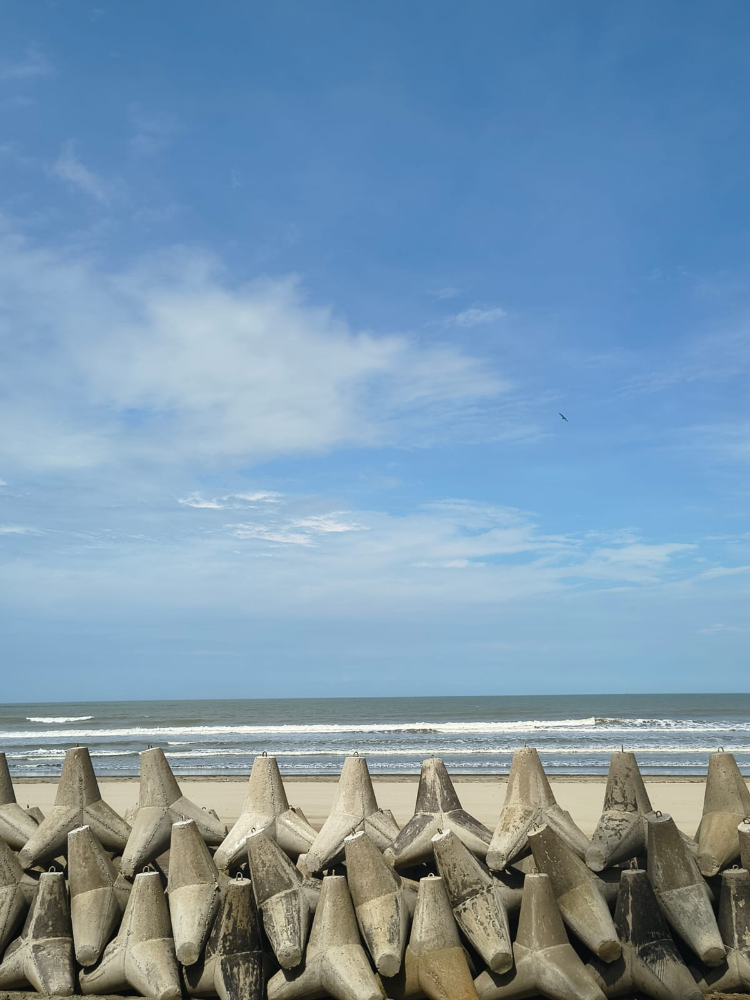
The sound of the waves, the endless sea and the fresh breeze made me feel peaceful. Sometimes the sea was calm, and sometimes the waves were wild. I loved watching the sea because every moment felt a little different.
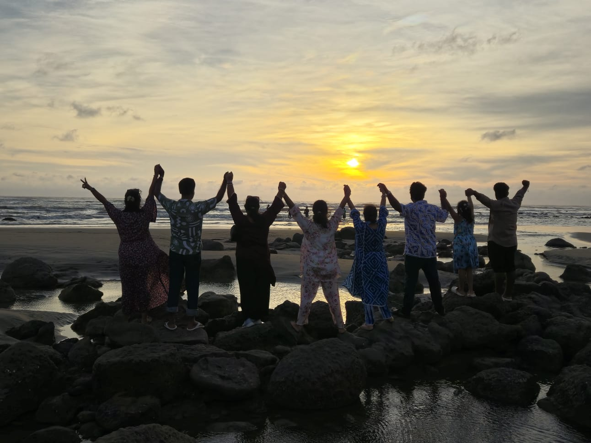
Watching the sunset beside the sea was one of my favorite moments. The sky slowly changed its colors, and everything looked golden and beautiful. It was a moment I wanted to capture forever.
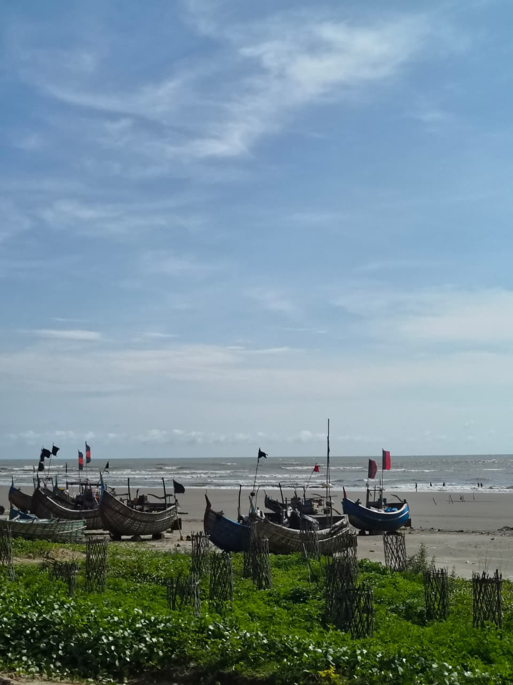
A little memory of Shampawan nouka. Places like this make a trip more special, and I wanted to keep this moment in my travel diary.
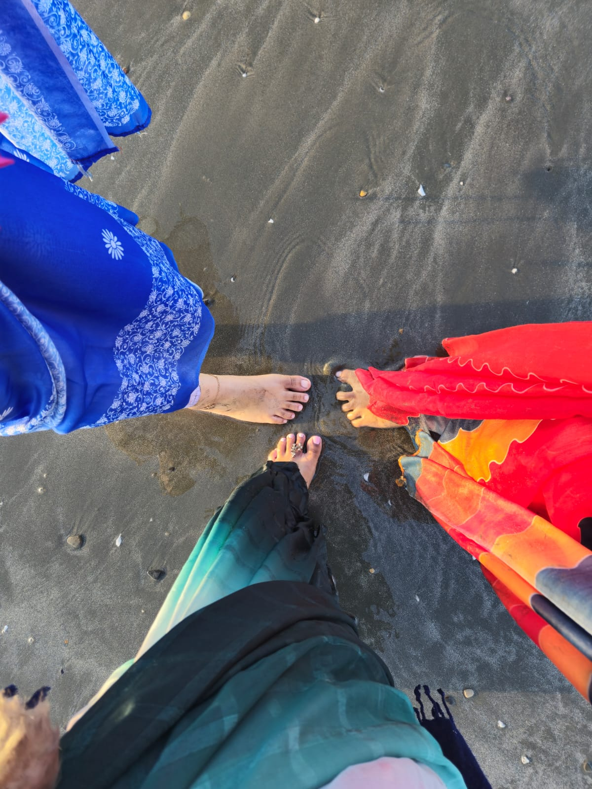
Wearing a saree by the sea is one of those dreams that feels so special. The sea breeze, the waves and the saree together made this moment one of my favorite memories from Cox's Bazar.
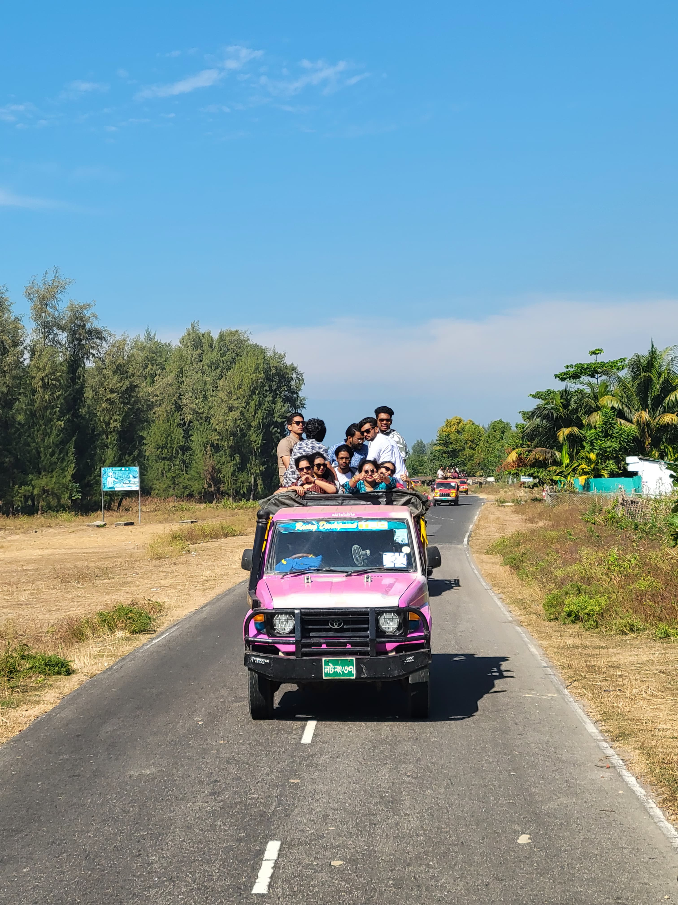
The Marine Drive road was another beautiful part of the trip. The road beside the sea, the hills and the open sky made the journey itself feel like an adventure.
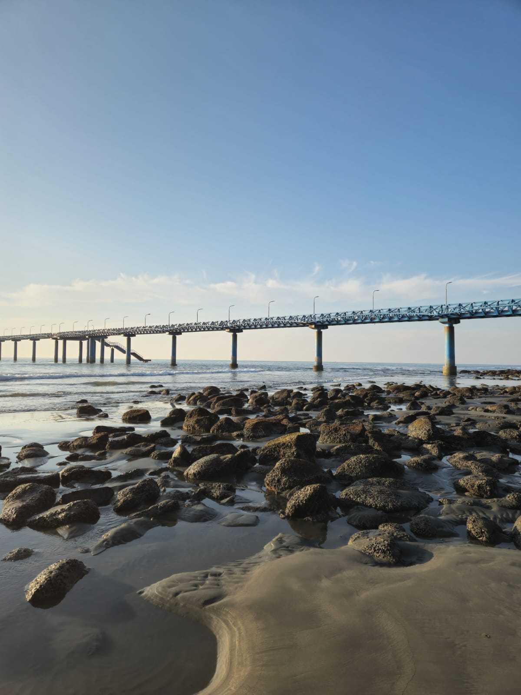
A memory from Navy Breeze that I wanted to keep here. Sometimes the little moments during a trip become the most memorable ones.
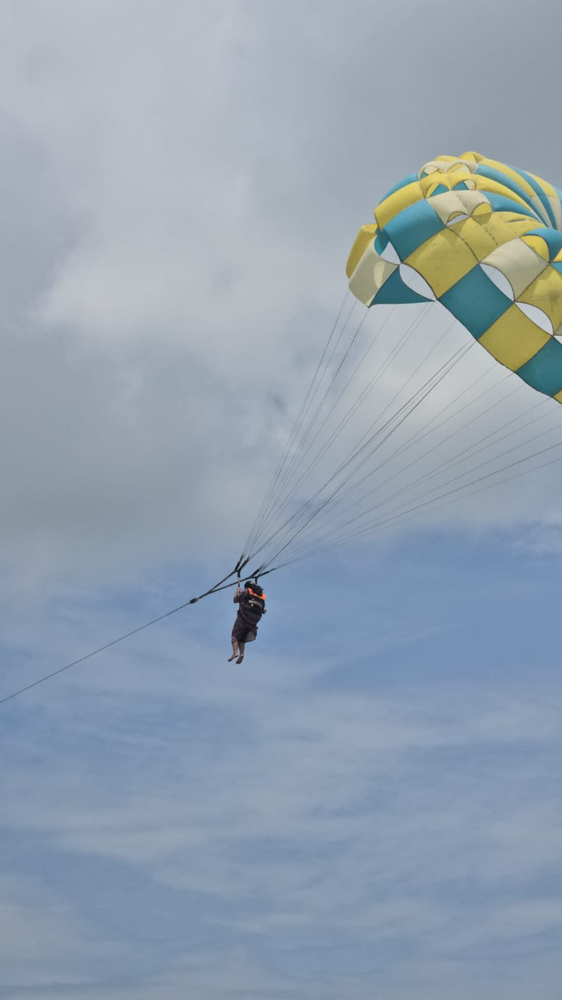
One of the most exciting things I did during my trip was parasailing. Seeing the sea from above was an unforgettable experience. It was thrilling, a little scary, but absolutely worth it. I am so glad I tried it.
Some moments from my two trips that I wanted to keep forever.
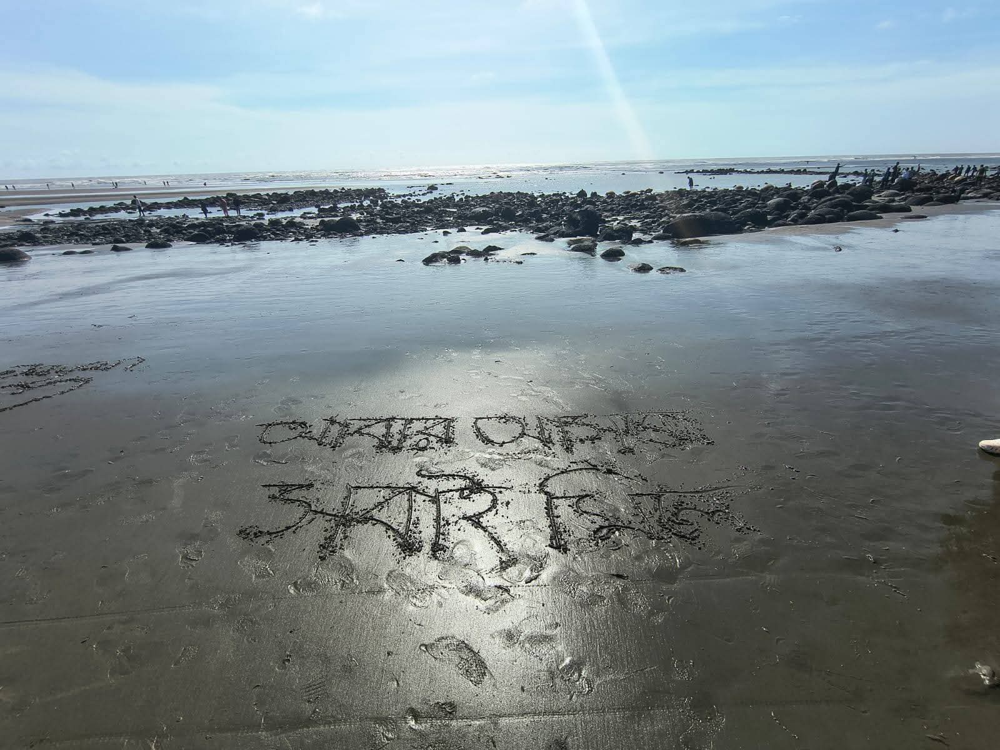
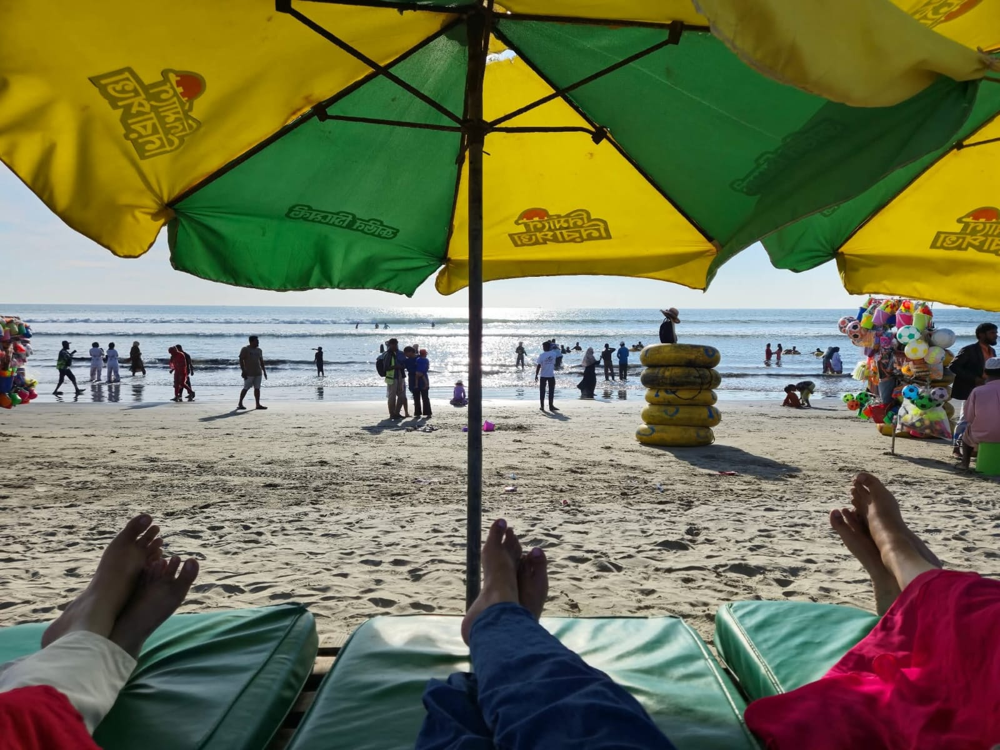
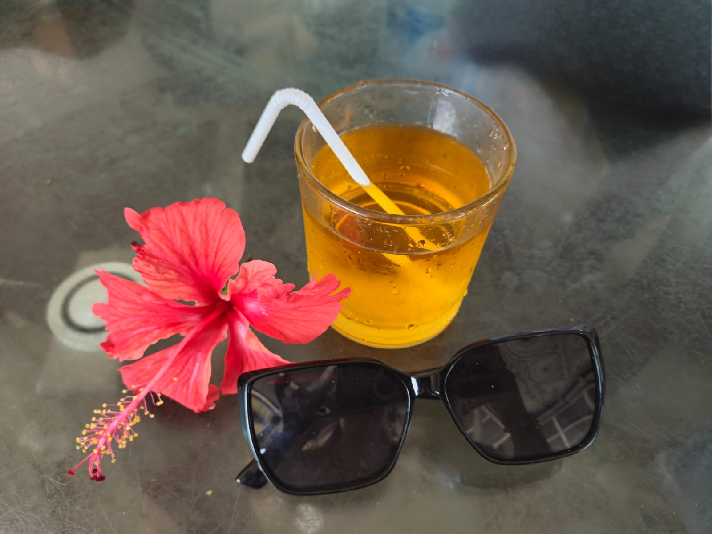
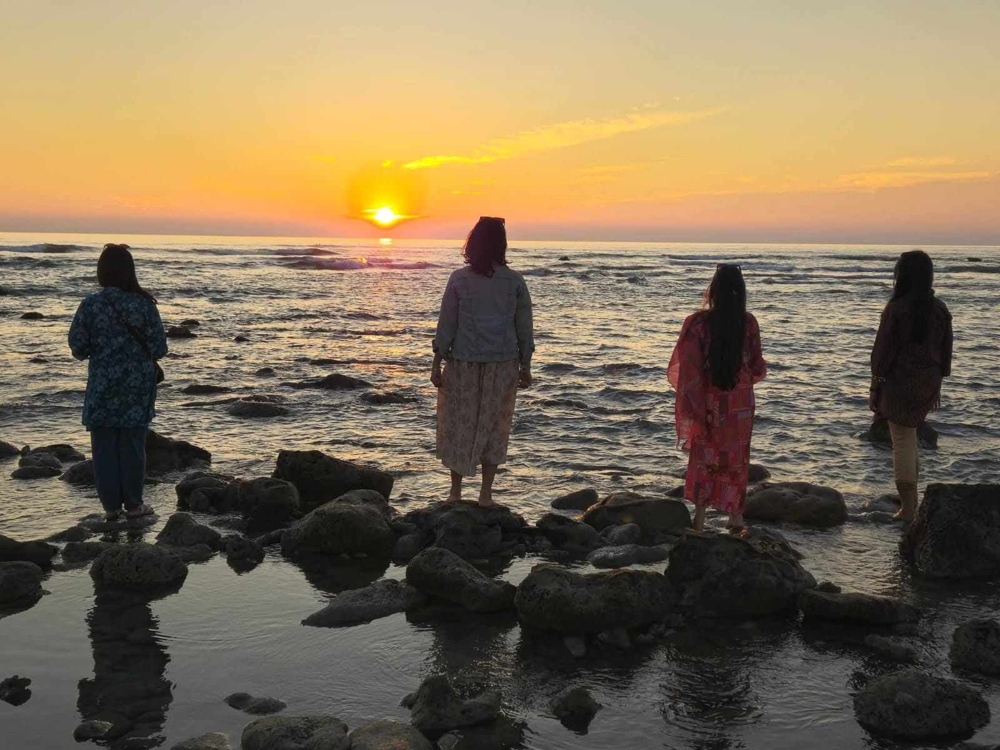
| Experience | Travel Companion | Memory |
|---|---|---|
| University Tour | Friends | Fun and adventure |
| Family Trip | Parents | Peace and togetherness |
| Parasailing | Myself | Thrilling experience |
| Beach Sunset | Family and Friends | Beautiful memories |
If you want to explore more about Cox's Bazar, its attractions and tourism information, visit the website below:
Explore Bangladesh TourismHave you visited Cox's Bazar or any other beautiful place? Share your experience with me!
Some places you visit, some memories you carry forever.
Thank you for visiting my travel diary!